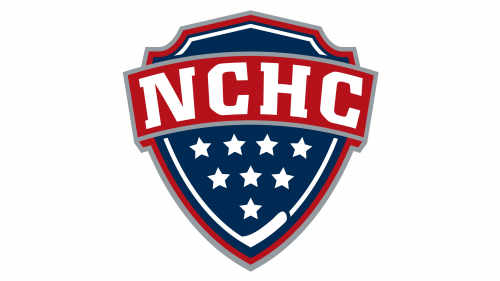

Est. on r/collegehockeyUpdated for 2026–27
A growing record of
college hockey.
Maps, rosters, results, and player histories built to explore, compare, and share.

- Studies
- 09
- Archive begins
- 1895–96
- Current season
- 2026–27
- Format
- Explore + export
Across Division I

Start here
Pick a way into the data.
The studies are living projects. Build a view in your browser, then save a clean image when you find something worth sharing.
Geography / player origins
Player Atlas
Move from the continent to a hometown. Compare states, provinces, countries, recruiting footprints, and production across seasons.
Open the map ↗How a roster gets built
Roster Origins
Follow the junior leagues, transfers, schools, and other paths behind every program.
Explore rosters ↗The season in motion
Conference Race
Replay the standings night by night, stop on any date, and see how the race changed.
Replay a race ↗The archive
More seasons.
Different questions.
The record stretches from sparse early scorelines to modern rosters, box scores, and player histories.
Coverage changes by season and source. Every study identifies the fields it can use, and uncertain records stay visible rather than being quietly discarded.
Behind the project
Built for the curious fan.
College Hockey Data combines current College Hockey News records with archived season, roster, game, and draft material. It began as a series of visual posts for r/collegehockey and keeps growing from the questions people ask there.
This is an independent fan project. It is not affiliated with the NCAA, College Hockey News, or any conference or school.